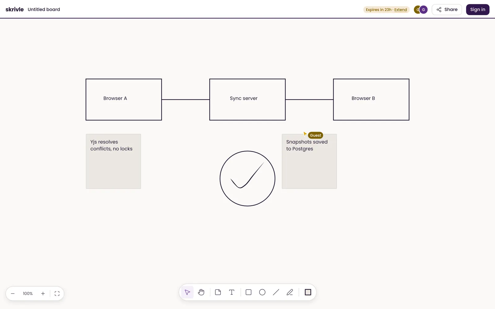

Festus Gbolade
/ Portfolio
elpis.cc
I build
real-time
web products that hold up in production.
Full-stack engineer. TypeScript, React, Next.js and Node.js, from schema to deploy.
skrivle.elpis.cc

Role
Full-Stack Engineer
Experience
4+ years, remote
Focus
Real-time systems
Location
Lagos, NG · UTC+1